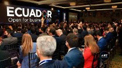
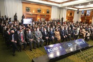

Overview
Ecuador hosted one of the most ambitious trade and investment forums co-organized by ALF and the Inter-American Development Bank. Structured as a high-level Investment Forum, it brought together government ministers, international investors, U.S. companies, multilateral organizations and Ecuadorian entrepreneurs.
Strategic Positioning
The mission emphasized Ecuador’s strategic geographical location, its wealth of renewable energy resources, its diversified agroindustrial base and its infrastructure modernization needs. It provided a decisive platform to align domestic priorities with global opportunities.
Program Architecture
- Plenary sessions with national authorities on economic reforms, incentives and development priorities.
- Sector-specific panels on renewable energy, telecommunications, infrastructure and agroindustry.
- B2B matchmaking connecting investors with Ecuadorian entrepreneurs and project leaders.
- Networking events and selected site visits to strengthen credibility and follow-up.
Outcomes & Legacy
The forum generated interest in renewable energy projects, infrastructure and logistics initiatives, agroindustrial export channels and institutional alliances between Ecuadorian chambers and U.S./regional business organizations.
Ecuador — Open for Business / IDB Investment Forum in Pictures
A visual record of institutional presentations, investment forums, B2B meetings and networking moments connected to this mission.


